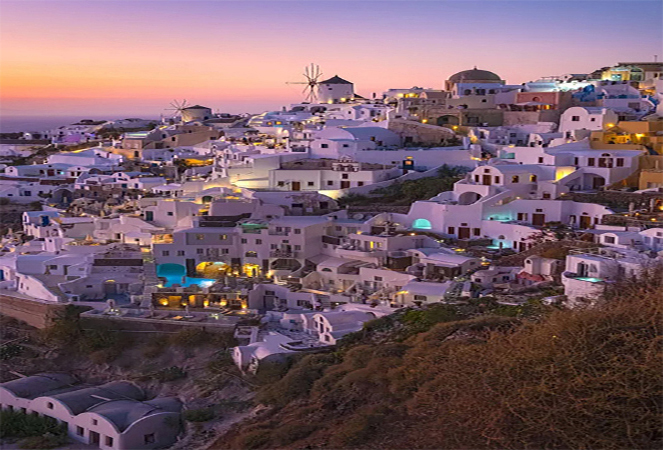

Everybody has his or her specific reasons to travel. Some travel for work, some travel for fun while for others it is a meaningful way of life. They travel to enjoy and move at the same time. Photography can be an effective way for narrating stories, creating awareness and understanding cultures, societies, and countries. Travelling and photography affect the way people view the past. It is not only about discovering lovely destinations, but it can also be an opportunity for meeting new people. But it feels awkward, shooting between people’s personal time causing distractions. Sometimes, photographers have to face many issues like harassment from policemen and threat from locals. Whatever the reason and issues, here are eight reasons through which traveling would definitely change your mind:

Hill Station

Mountain

Desert

Copyright©2024 |World of Travel Photography|